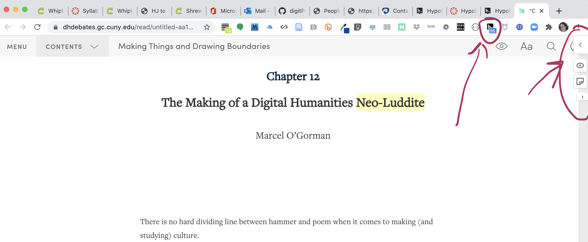
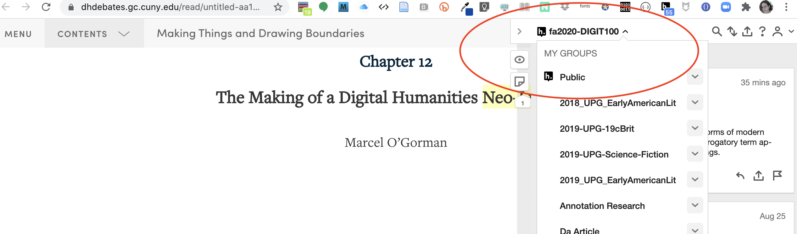

Leaf by Nigglewith Hypothes.is Annotations
This assignment asks you to apply your Hypothes.is account that we used at the beginning of the semester. You will be writing a new set of annotations in our private class group to annotate, illustrate, and re-mediate J. R. R. Tolkien’s short story, Leaf by Niggle
. This story introduces some of Tolkien's famous theories (also part of his Essay on Fairy Stories, about the need for poeple to share and occupy Secondary Worlds, and their place in a Primary World, and it is often assigned reading for designers of virtual worlds of all kinds. We are reading it as a preface for our exploration of game worlds at the end of this course.
Start by making sure you can still access your Hypothes.is account and our private class group at https://hypothes.is/groups/Z75eBVkM/fa2020-digit100. If you need help with this, check in with Dr. B or comment in this issue on the introDH-Hub.
Here are some screen captures to be sure you are opening Hypothes.is on your browser and working within our class group. These are taken from my Chrome web browser.
Here is what the Hypothes.is extension looks like when installed on the Chrome browser:
As a reminder, here is what you should see if you are annotating as part of our Hypothes.is class group:
Re-mediation work literally involving multiple kinds of media with the original text medium of this narrative. It will also help us to connect the narrative of this story to forms of media that help us to understand and visualize its contexts that matter to us. Our work will literally be to illustrate the text of Leaf by Niggle
with our annotations, though a full re-mediation of it might involve creating a virtual environment or an animation that helps people to visualize and experience the events and ideas of this story.
In your annotations, consider yourself to be doing two kinds of things:
Your annotations may be doing both things at once: explaining and illustrating because often a picture can explain or demonstrate something in a way that responds to the text you are reading. Try to provide artwork, illustrations, media that do the following:
We will do two rounds of annotations: the first round (in which each of you posts at least three annotations to begin), before our next class on Monday November 16. The next round will occur after we meet to discuss this complex story together, and you will add at least three more annotations to the first set, and possibly go back and modify annotations you first made if you want to add something to them.